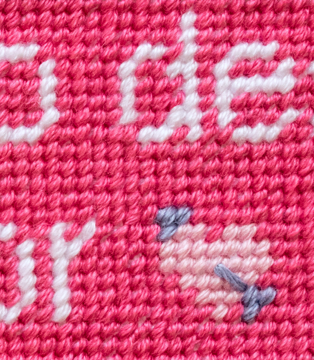
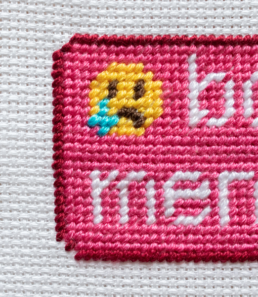
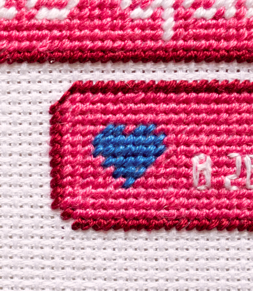
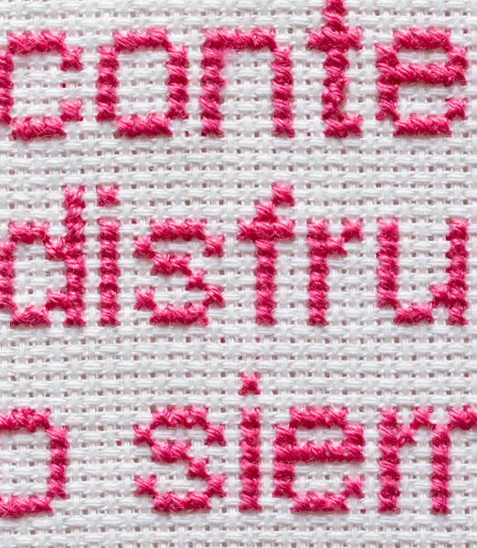

A touch of color and cuteness on the streets
Public messages of tenderness
Size 120 x 150 cm
Materials 120 x 150 cm
Technique Petit point, photography
Year 2024 - Ongoing
A touch of color and cuteness on the streets
Size 120 x 150 cm
Materials 120 x 150 cm
Technique Petit point, photography
Year 2024 - Ongoing
I wanted to do something with those sentences that had an impact in me to perpetuate them into, at least, a longer time span than those of the ephemeral chats, as I felt at unease with the quickness and short lifespan of nowadays' communication. So I started these series of embroidered messages, stitching together my little public manifesto of color and tenderness.




But I also felt that bringing attention and care to these messages of affection was something that not only I, but my surroundings, needed to dedicate more attention to. Specially on times where everything that surrounds us feels pessimistic at times. So I took those messages that brightened my day, made me sigh, or helped sweep away sadness, and I started leaving them as stickers on columns, posters, or mirrors around Montevideo.


As this project was to be presented at Nuevo Reino's 2024 Portal, I needed a way to show not only the dedication of embroidering these messages but also the purpose of them living on the city. So each embroidery was shown alongside a photograph of a sticker of it on the streets.